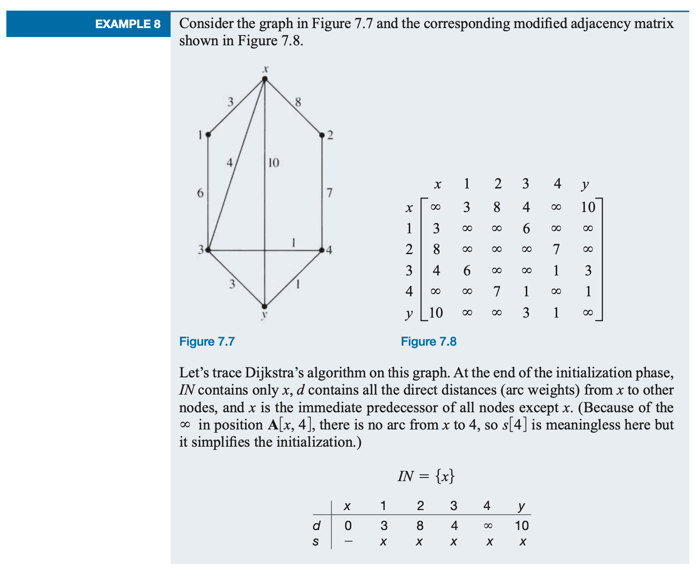

Chapter 7: Graph Algorithms
Section 7.3 Shortest Path
Assume that we have a simple, weighted, connected graph, where the weights are positive. Then a path exists between any two nodes x and y. Indeed, there may be many such paths. The question is, How do we find a path with minimum weight? Because weight often represents distance, this problem has come to be known as the ''shortest-path'' problem. It is an important problem to solve for a computer or communications network, where information at one node must be routed to another node in the most efficient way possible, or for a transportation network, where products in one city must be shipped to another.
In the shortest-path problem, we put no restrictions (other than minimum weight) on the nature of the path, and because the graph is connected, we know that such a path exists. For this reason we may hope for an efficient algorithm to solve the problem, even though no such algorithm is known for the traveling salesman problem. Indeed such an algorithm does exist; it was published in 1959 by Edsger W. Dijkstra, a prominent computer scientist of the twentieth century.
Dijkstra's Algorithm
The shortest-path algorithm is known as Dijkstra's algorithm. A pseudocode form of the algorithm is given in the accompanying box.Here shortest path means minimum-weight path. We actually assume a modified adjacency matrix A, where A[i,j] is the weight of the arc between i and j if one exists and A[i, j] has the value ∞ if no arc exists (here the symbol ∞ denotes a number larger than any weight in the graph).
Dijkstra's algorithm terminates when y is put into IN, even though there may be other nodes in the graph not yet in IN (such as node 2 in the above Example).
Example
Dijkstra's Algorithm Demo in JavaScript
Dijkstra's Algorithm DemoPractice
🧠 Dijkstra Is Great — But Not Scalable Alone
- ☆ Dijkstra’s algorithm works well for small graphs, like grids or classroom demos.
- ☆ But for a global-scale road network with millions of nodes and edges, it becomes too slow.
- ☆ Instead, Google Maps use modern, scalable algorithms inspired by it — optimized for speed, traffic, and geography.